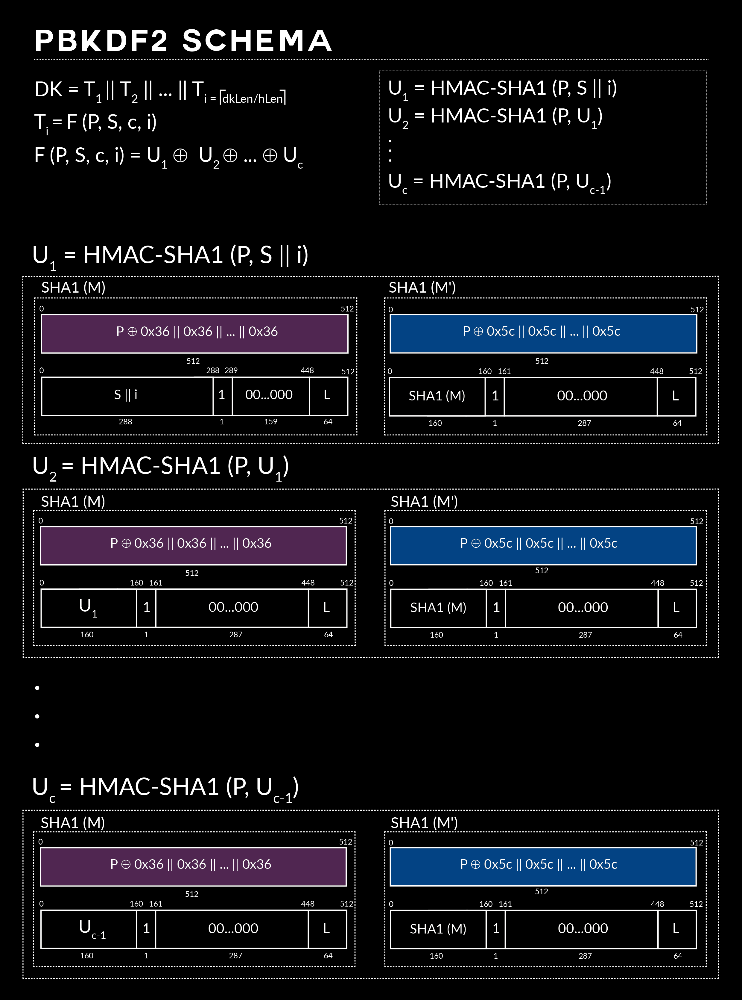
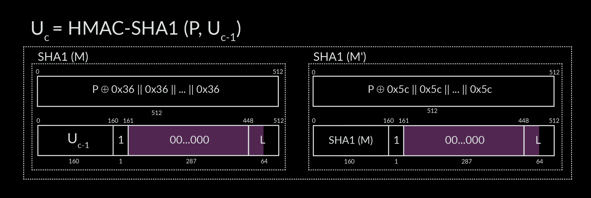
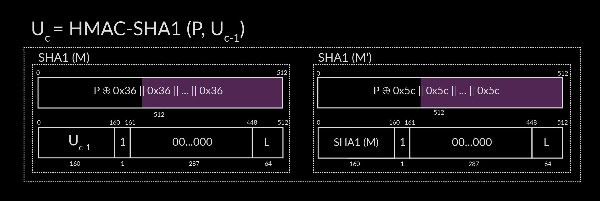
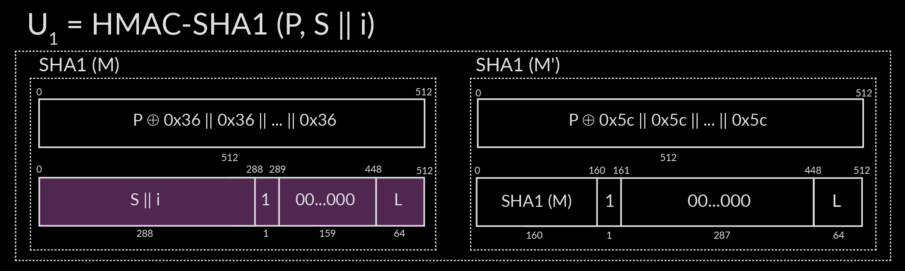

Last Update: December 16, 2015-----[ Exploiting some weaknesses of PBKDF2 ]---------[ 0x00 ] Intro ----[ 0x01 ] PBKDF ----[ 0x02 ] SHA1 ----[ 0x03 ] HMAC ----[ 0x04 ] RSA Labs' PBKDF2 ----[ 0x05 ] Weaknesses ---------[+] Precomputing a message block ---------[+] Zero based ---------[+] Same value based ---------[+] Precomputing a word expansion ----[ 0x06 ] Conclusions ----[ 0x07 ] References ----[ 0x00 ] Intro This article is based on a project we started in 2014 @ CLUB (Cryptography and Coding Laboratory) @ UNIMI. It has been presented in CANS 2015 [13] and published in [14]. ----[ 0x01 ] PBKDF For several known reasons, in password-based cryptography a humanly manageable password can't be directly used as a key for a given cryptographic system; a Password-Based Key Derivation Function (PBKDF), is then used to generate a proper cryptographic key of the desired length, starting from a user password. PBKDFs are also used, instead of a simple hash function, for password hashing, although they weren't originally designed for this purpose. Generally speaking, a Key Derivation Function, KDF, is a function that take a source of initial keying material, and derive from it one or more pseudorandom keys. Key material can be any bit sequence from a source of more or less entropy [1]. When the initial key material is from a source of low entropy, specifically a user typed password, these KDFs are known as PBKDFs, password-based KDFs. PBKDFs should be relatively expensive to compute, in order to increase the computational effort of an exhaustive search attack. In cryptography this is known as key stretching, a phrase that is now widely used the same as key strengthening [2]. A typical approach consists in using a salt to prevent building universal dictionaries, and an iteration count that specifies how many times the underlying function should be iterated in order to slow down the computation of the derived key. ----[ 0x2 ] SHA-1 We will not completely explain SHA-1 here, for those who are not familiar with this hash function please refer to [12]. However to make a recap, in a pre-processing phase SHA1 appends one bit set to 1 to the original message then pad it with some bit set to 0, until the resulting message length is congruent to 448 (mod 512), then appends L, the length of the original message, represented in a 64-bit big-endian integer. Therefore the message length is multiple of 512 bits. The message is broken up into message blocks of 512 bits and then SHA1 processes each message block as follow: + Divides it in sixteen 32bit words + Expands this 16 words to a total of 80 through bitwise operation like circular shift and exclusive-or + Compresses down this 80 words into 5 words applying some other functions + These 5 words are known as intermediate hash values Now the next message block is processed, and each of its intermediate hash value is added to each one calculated in the previous message block, and so on. When the last message block is consumed, a concatenation of these 5 words is returned, consisting in a 160 bit hash value. ----[ 0x3 ] HMAC HMAC (Hash-based Message Authentication Code) is a specific algo for calculating a message authentication code (MAC) involving a cryptographic hash function and a secret key. As any MAC, it provides a way to verify both the integrity and the authentication of a message. HMAC can be used with any iterative cryptographic hash function, in combination with a secret shared key. The cryptographic strength of HMAC depends on the properties of the underlying hash function [5]. In 2006 M. Bellare proves that HMAC is a PRF under the sole assumption that the underlying compression function is a PRF [11]. A Pseudo Random Function (PRF), is a function which emulates a random oracle: no efficient algorithm can distinguish between a PRF and a random oracle output. Typically, MACs are used between two parties that share a secret key in order to validate information transmitted between these parties, but in PBKDF2 HMAC is used as a PRF. HMAC can be defined as follow: HMAC = H(K xor opad, H(K xor ipad, text)) where: H is the hash function B is the byte-length of H's internal block. K is the shared key ipad is the byte 0x36 repeated B times opad is the byte 0x5C repeated B times. text is the message to be authenticated Read the definition of HMAC as follow: h = H(K xor ipad || text) HMAC = H(K xor opad || h) If K is shorter than B it's padded with 0s to fit the block size, before xoring it with either ipad or opad. ----[ 0x04 ] RSA Labs' PBKDF2 RSA Laboratories, in PKCS5, defines widely referenced recommendations for the implementation of password-based cryptography [3]. They recommend one algorithm to derive keys: PBKDF2. It is commonly adopted in many security related applications, for instance authentication on mobile devices, key derivation for full disk encryption and password hashing. [cite del paper di LUKS?] PBKDF2 takes a user passphrase p, a random salt s, an iteration counter c, and dkLen, the derived key length, and return the derived key DK. DK = PBKDF2(p,s,c,dkLen) Unlike the earlier standard, PBKDF2 can derives keys of arbitrary length, it generates as many block Ti as needed to cover dkLen, the desired key length. Each Ti is generated iterating the underlying PRF as many times as specified by an iteration counter c. The length of the Ti is bounded by hLen, the length of the PRF output. The DK is the concatenation of i blocks where i = ceiling(dkLen/hLen). DK = T1 || T2 || ... || Ti where: T1 = F(p,s,c,1) T2 = F(p,s,c,2) . . . Ti = F(p,s,c,i) Each Ti is computed as: Ti = U1 xor U2 xor ... xor Uc where: U1 = PRF(p,S||i) U2 = PRF(p,U1) . . . Uc = PRF(p,Uc-1) The numbers of iterations will be a burning question, choosing a reasonable value depends on environment and varies from an application to another, it should be selected as large as possible, as long the time required to generate the key is acceptable for the user. For very critical keys on very powerful system an iteration count of 10.000.000 may be appropriate, while a minimum of 1000 iterations is recommended for general purpose [4]. Unlike the password, the salt and the iteration count do not need to be kept secret. We focus on PBKDF2 with HMAC [5], we show that is possible to avoid most of the CPU intensive operations which are the core of the PBKDF2 derivation process, by substituting them with a set of equivalent less onerous instructions, this way the algorithm strength is significantly reduced. This entail a consequent decrease of the time one needs to spend performing any such exhaustive key search attack on password derived keys. Note that the time needed to try all password derived keys is significantly less then the time needed to try all possible keys. The same method can be used with HMAC with many hash functions such as SHA-2 and MD5 but for simplicity we focus on HMAC-SHA1, that is the default for PBKDF2. This way it is possible to derive a key in HALF TIME with respect to the vanilla method. Moreover we present some other minor optimizations that reduce even more the derivation time. As a consequence an exhaustive key search attack against a key derived with PBKDF2 is significantly less expensive, and this is an additional reason to look for new password based key derivation schemes [6]. ----[ 0x5 ] Weaknesses As we previously said PBKDF2 aims to slow down brute force attacks through CPU intensive operations in the key derivation process. In this section we present different improvements in the computation of the PBKDF2 algorithm. Some of these concern the precomputation of some values, that can be reused instead of recalculating them during the derivation process. These precomputations are independent from the cryptographic hash function used in HMAC, because they are applied directly to the HMAC definition; other optimizations aim to reduce the number of instructions avoiding useless operation exactly in the HMAC's hash function, these are clearly dependent from the specific hash function adopted. We will show how it is possible to reduce the strength of PBKDF2 by more than 50% against exhaustive key search attacks. The improvements we present are not related to any specific implementation of PBKDF2. For the following improvements as an example we will use as Salt length the one define in the LUKS format [7][8]. ----[ Precomputing a message block Deeply analyzing PBKDF2, HMAC, and their interaction, we noticed that it is possible to halve the time one need to spend on deriving a key from a password, by simply calculating once and only once the intermediate hash values of the first message block for the two SHA1 calls in the first HMAC invocation. These precomputed intermediate hash values will be the same for all the SHA-1 calls in all HMAC invocations of the derivation process. The main problem is that PBKDF2 calls HMAC always with the same password P, which pads this password always with the same two values to create a string as long as the message block length that its underlying hash function works with. This allows us to precompute the first message block of the two SHA1 calls, and then reuse them in all the subsequent HMAC invocations. Since we can avoid to process one of the two message block in every SHA-1 call, this optimization reduce by 50% the operations involved in the derivation process. As previously said because this improvement exploits a weakness in the way PBKDF2 uses HMAC, it can be reused with several hash functions such as SHA-2 family [9], MD5, and many others. Note that only in the case of the most first HMAC call the advantage gained applying this idea depends on the salt length (defined by the application). In fact if the salt length exceeds the hash function message block length, it will be unavoidable to compute more than two message blocks. In all the other calls the SHA1 of the previous message block is used as salt, and we will never have to compute more than two message blocks. Hence this particular most first case will not affect the global gain.  ----[ Zero based optimization Given that every SHA1 call, except the first one in U1, are performed on a string formatted according to the scheme in the figure below, we can observe that every time there are 287 zeros in the last 512 bits of the string, these 512 bits are the second message block processed in every SHA1 call. There are more than 287 zeros to be precise, because the string end with the binary representation of L, the length in bit of the message to be hashed, that in our case, according to HMAC scheme [5], is always 672, this value is represented on 64 bit, leaving room for more 22 consecutive zeros. SHA1, in the main word expansion phase, expands its 512-bits message block iterating t from 16 to 79 using the following function: W[t] = ROTL((W[t-3] xor W[t-8] xor W[t-14] xor W[t-16]), 1) The result is that for a few steps, the word expansion function is working with some W[t] filled with zeros. We can simply not execute a few XOR operations because XORing a value with zero result in the same value. This optimize a little the procedure as suggested by Atom [10]. In the standard word expansion are carried out 192 XOR, knowing this optimization can be implemented an ad-hoc word expansion that use 165 XOR, saving 27. It should be remembered that this word expansion is executed in each SHA1 call, there are two SHA1 call for each HMAC, and many HMAC call as the number of the iteration chosen by the application. This means that there will be probably many SHA1 calls. :)  ----[ Same value based optimization It is possible to avoid some other useless operations in the word expansion of the first message block too. As we can see from the figure below, the first message block of each SHA1 call has the same padding values in every invocations, so, like in the previous zero-based optimization, we can avoid some useless operations. We should know that XORing a value to itself result in zero. Supposing that an attacker can organize its password list in same length classes, for each class the SHA1 word expansion will work with the same number of W[t]'s filled with the HMAC padding value, 0x36 or 0x5C, hence, depending on the password length we can avoid more or less XORs, like in the previous 0 based. The organization in same length classes is essential for the sake of write a reasonable hypothetical ad-hoc word expansion, that, based on password length, avoids a few XOR sum. Note that if used in combination with our precomputed-message-block optimization, the gain obtained due to this trick is far too low because we process the first message block only once for each derivation, independently from the iteration count. In the standard word expansion are carried out 192 XOR, knowing this optimization can be implemented an ad-hoc word expansion that use 162 XOR, saving 30.  ----[ Precomputing a word expansion This is a little improvement strongly related to HMAC-SHA1. In PBKDF2 the derived key is obtained extracting the first dkLen bytes from the concatenation of the computed T[i]: DK = T1 || T2 || ... || Ti where: i = ceiling(dkLen/hLen) Hence to derive a key we have first to compute a certain number of T[i] and then extract the key from their concatenation. In the computation of each T[i], more specifically in the first HMAC call of each T[i], are calculated two SHA1 hashes, as specified by the HMAC algorithm; deeply analyzing the first SHA1 invocation we noticed that, as highlighted in the following figure, the second message block does not depend on the password at all. Hence, given a salt, the word expansion of this message block produce the same values independently from the password. This means that an attacker can avoid to compute this word expansion in each try of its password list, reusing the same precomputed values.  ----[ 0x06 ] Conclusions Implementation note in RFC2104 [5] describes our "Precomputing message block" as a performance improvement for message authentication, but in PBKDF2 HMAC should help to slow down the derivation process instead. We found that in 2015 this weakness affects two of the main crypto libraries: Libgcrypt v1.6.3 and ARM mbed TLS v1.3.11. It's important that every crypto library should implement this improvement, to better understand how this could affect real world applications we will post another interesting article about the LUKS format and Cryptsetup asap. To be continued ... ----[ 0x07 ] References [1] Hugo Krawczyk, Cryptographic Extraction and Key Derivation: The HKDF Scheme [2] Strengthening passwords, Abadi, Martin and Lomas, T.Mark A and Needham, Roger [3] RSA Laboratories, PKCS #5 V2.1: Password Based Cryptography Standard [4] NIST, SP800-132: Recommendation for password-based key derivation [5] RFC 2104: HMAC: Keyed-hashing for message authentication [6] Password Hashing Competition [7] C. Fruhwirth, New methods in Hard Disk Encryption [8] C. Fruhwirth, LUKS On-Disk Format Specification Version 1.2.1 [9] NIST, FIPS PUB 180-4: Secure Hash Standard [10] Jens Steube, Optimizing computation of Hash-Algorithms as an attacker [11] Bellare, New roofs for NMAC and HMAC: Security without Collision-Resistance [12] NIST, Secure Hash Standard (SHS) [13] The 14th International Conference on Cryptology and Network Security [14] Cryptology and Network Security - 14th International Conference, CANS 2015, Marrakesh, Morocco, December 10-12, 2015, Proceedings

crypt.coffee website by cryptcoffee is licensed under a
Creative Commons Attribution-NonCommercial-ShareAlike 4.0 International License.